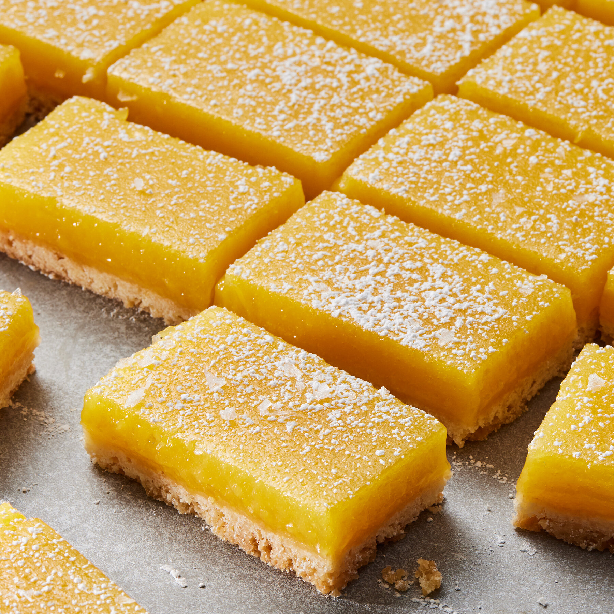

Grand's Lemon Bars

headnote
"These lemon squares are a staple in my kitchen whenever I want something bright and simple. I first started making them for family birthdays because they’re a lot easier to pull together than a layer cake, and they always get more compliments. I really love how the buttery crust balances out the tartness of the lemon, and I've found that using extra zest gives them a much better kick than just using juice alone."
-Mr. Grand
Ingredients:
Crust
- Unsalted Butter: 3/4 cup + 2 tbsp, melted; the base for the shortbread crust.
- Powdered Sugar: 3 cups. Sweetens the crust.
- Flour: 3 cups. Provides structure to solidify the crust.
- Vanilla Extract: 1 tsp. The "secret ingredient" for a flavorful crust.
- Salt: 1/2 tsp. Balances the sweetness of the shortbread.
Lemon Filling
- Eggs: 8 large, room tempature. The primary structural agent for the filling.
- Lemon Juice: 1 cup. Freshly squeezed is best.
- Lemon Zest: 3 tbsp. For an enhanced fresh flavor.
- Granulated Sugar: 3 cups. Sweetens and helps set the lemon curd.
- Flour: 1/2 cup. A neccessary component.
Instructions:
Watch Video- Preheat Oven: Arrange a rack in the middle and heat the oven to 350°F. Fully line a 9x13-inch baking dish with parchment paper.
- Make the Crust: Combine the melted butter, powedered sugar, vanilla extract, salt, and flour until a dough forms. Press the mixture firmly into the bottom of the prepared pan and bake for 20-30 minutes or until light golden. Glass pans work best!
- Make the Filling: Pulse the granulated sugar and lemon zest together. In a bowl, whisk this lemon sugar with the eggs, fresh lemon juice, and a small amount of flour to help the curd set.
- Bake: Pour the lemon filling over the hot, pre-baked crust. Return to the oven and bake for 25 minutes, or until the filling is set with only a slight wiggle in the center.
- Cool: Allow the bars to cool on a wire rack at room temperature for 1 hour, then refrigerate for at least 2 hours (or overnight) to ensure the curd is fully firm.
- Serve: Carefully remove bars from the pan using the parchment. Slice into squares and, if desired, finish with a dusting of powdered sugar before serving.
Comments and Reviews: